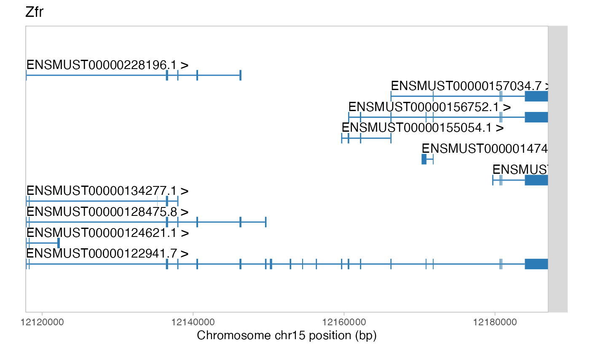
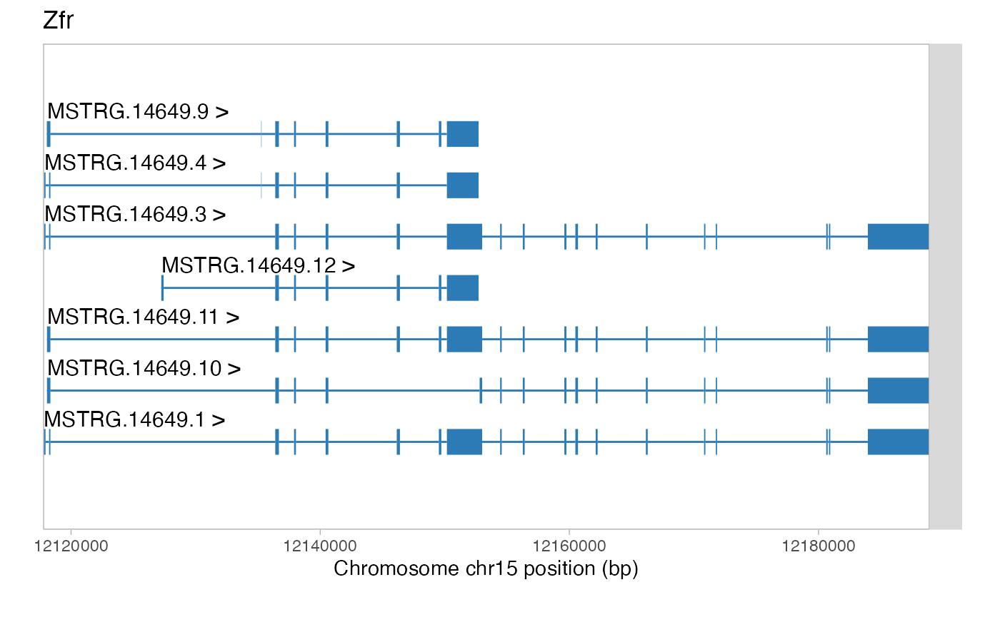
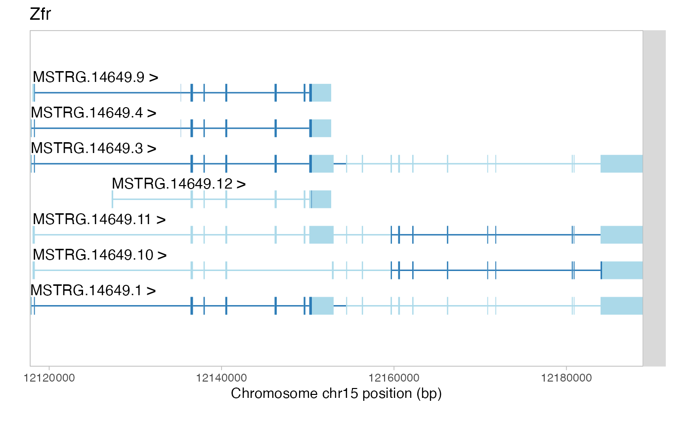
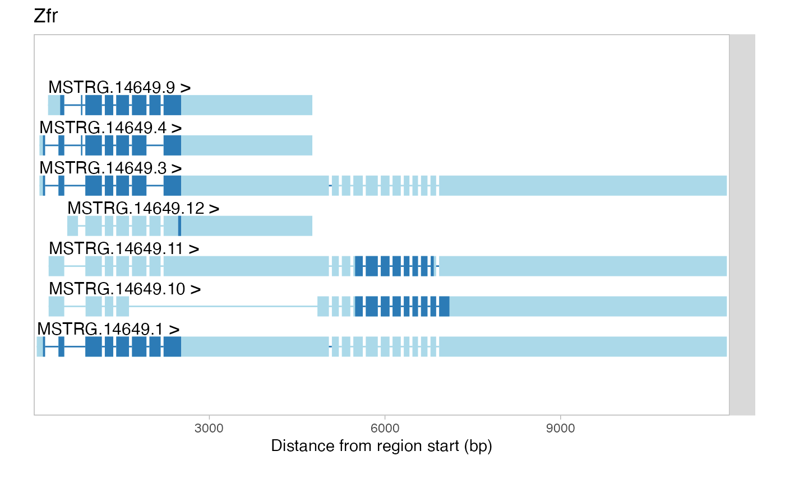
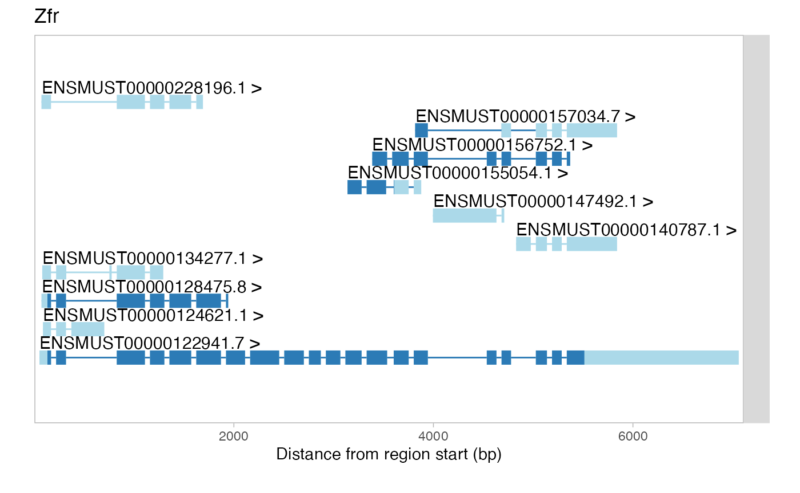

Using factR
Fursham Hamid
2021-01-08
factR.RmdIntroduction
Many eukaryotic genes give rise to multiple RNA isoforms, increasing the protein-coding capacity of the genome and extending the range of post-transcriptional regulation possibilities. High-throughput sequencing is often used to deduce repertoires of transcripts expressed in specific biological samples by aligning the data to genomic sequences and assembling the alignments into transcript architectures. This typically outputs Gene Transfer Format (GTF) files describing newly identified transcripts as sets of exonic coordinates, but lacking the information about their coding sequences (CDSs; also known as ORFs) and possible biological functions.
To this end, we developed a package for functional annotation of custom-assembled transcriptomes in R (factR). factR predicts CDSs for novel RNA isoforms using a reference-guided process and then determines domain organisation of the protein products and possible susceptibility of transcripts to nonsense-mediated decay (NMD; a pathway destabilizing mRNAs with premature translation termination codons). factR also provides supporting tools for matching new transcripts to “official” gene IDs, visualizing transcript architectures and annotating alternatively spliced segments.
Getting started
Installing factR
To install factR, enter the following commands in your R environment:
install.packages("devtools")
devtools::install_github("fursham-h/factR") Materials needed
Custom-assembled transcriptome
factR requires a custom transcriptome file in the GTF format as an input, and we provide the following three custom transcriptome files that can be used to test factR tools:
-
bulk_merged.gtf.gz assembled using the HISAT2-StringtTie2 pipeline (Pertea et al. 2016) from bulk RNA-seq data for mouse embryonic stem cells treated with the NMD inhibitor cycloheximide (CHX) or left untreated as a control.
-
sc_merged.gtf.gz assembled using the HISAT2-StringtTie2 pipeline from single-cell RNA-seq data for glutamatergic neurons, GABAergic neurons, astrocytes or endothelial cells from the mouse visual cortex (Tasic et al. 2018).
- lr_merged.gtf.gz assembled using minimap2 (Li 2018) and StringtTie2 (Kovaka et al. 2019) from brain-specific long-read Oxford Nanopore RNA sequencing data (Sessegolo et al. 2019).
Method to download the above GTF files is described in the “Importing and inspecting GTF data” section below.
Users may alternatively prepare their own GTF files making sure that these contain both gene_id and transcript_id attributes.
Reference transcriptome
Several factR functions require reference transcriptome files (GTF or GFF3) as a guide. Such files can be accessed from within the R environment using e.g. the R package AnnotationHub or downloaded from an external database such as GENCODE or Ensembl. Both possibilities are described in the “Updating gene info” section below.
Genome
factR needs genomic DNA sequence to predict CDSs. Users may obtain genome files using e.g. BSgenome or AnnotationHub or download them from an external database such as GENCODE or Ensembl. We describe this in more detail in the “Constructing CDS information” section below.
Using factR
Load factR to the R environment as follows:
library(factR) Importing and inspecting GTF data
factR handles transcriptome information in the form of GenomicRanges objects containing genomic interval data and relevant metadata. To create such an object from a GTF file, we use the importGTF function:
selected.data <- "sc"
download.file(paste0("https://github.com/fursham-h/MiMB-factR-supplement/raw/master/",
"Custom%20transcriptome/", selected.data, "_merged.gtf.gz"),
"input.gtf.gz")
custom.gtf <- importGTF("input.gtf.gz") This should import sc_merged.gtf.gz, and we will use this input in the walk-through below. To try bulk_merged.gtf.gz or lr_merged.gtf.gz, simply change “sc” to “bulk” or “lr” in the selected.data variable. Users may import your own GTF file by specifying the path to such file in the importGTF function.
The imported GTF file is stored as a GenomicRanges object.
class(custom.gtf)
#> [1] "GRanges"
#> attr(,"package")
#> [1] "GenomicRanges"Contents of the object can be examined using head:
head(custom.gtf)
#> GRanges object with 6 ranges and 9 metadata columns:
#> seqnames ranges strand | source type score
#> <Rle> <IRanges> <Rle> | <factor> <factor> <numeric>
#> [1] chr1 3188551-3672854 - | StringTie transcript 1000
#> [2] chr1 3188551-3207317 - | StringTie exon 1000
#> [3] chr1 3213439-3216968 - | StringTie exon 1000
#> [4] chr1 3421702-3421901 - | StringTie exon 1000
#> [5] chr1 3670552-3672854 - | StringTie exon 1000
#> [6] chr1 3205901-3216968 - | StringTie transcript 1000
#> phase gene_id transcript_id exon_number gene_name
#> <integer> <character> <character> <character> <character>
#> [1] <NA> MSTRG.1 MSTRG.1.1 <NA> <NA>
#> [2] <NA> MSTRG.1 MSTRG.1.1 1 <NA>
#> [3] <NA> MSTRG.1 MSTRG.1.1 2 <NA>
#> [4] <NA> MSTRG.1 MSTRG.1.1 3 <NA>
#> [5] <NA> MSTRG.1 MSTRG.1.1 4 <NA>
#> [6] <NA> MSTRG.1 ENSMUST00000162897.1 <NA> Xkr4
#> ref_gene_id
#> <character>
#> [1] <NA>
#> [2] <NA>
#> [3] <NA>
#> [4] <NA>
#> [5] <NA>
#> [6] ENSMUSG00000051951.5
#> -------
#> seqinfo: 39 sequences from an unspecified genome; no seqlengthsIn addition to genomic coordinates (seqnames and ranges), a typical GTF file contains metadata describing the feature type (e.g. transcript or exon), transcript IDs and some information on their parental genes.
Use the following command to calculate the total number of transcripts in the input transcriptome:
Note that none of the transcripts in the custom.gtf object contain CDS information:
Plotting transcript structures
Users may visualize specific sets of transcripts using viewTranscripts. For example, the following will plot transcripts from the Zfr gene encoding a conserved zinc finger-containing RNA-binding protein with known neuronal functions :
viewTranscripts(custom.gtf, gene_name == "Zfr") 
StringTie2, a popular transcript assembler used to generate our custom GTF, typically assigns arbitrary names to newly identified transcripts (e.g. “MSTRG.x.y”) and uses the same prefix for their gene IDs (e.g. “MSTRG.x”). Incidentally, this is why the output above contains 10 previously known Zfr transcripts but lacks any novel entries.
Updating gene info
factR can update gene metadata in custom transcriptome objects using a reference annotation as guide. Below, we describe two alternative ways to obtain mouse reference transcriptome data from GENCODE.
- Using AnnotationHub package
# query database for mouse gencode basic annotation
library(AnnotationHub)
ah <- AnnotationHub()
#> using temporary cache /var/folders/24/8k48jl6d249_n_qfxwsl6xvm0000gn/T//RtmptZ90WN/BiocFileCache
#> snapshotDate(): 2020-10-27
query(ah, c('Mus musculus', 'gencode', 'gff'))
#> AnnotationHub with 9 records
#> # snapshotDate(): 2020-10-27
#> # $dataprovider: Gencode
#> # $species: Mus musculus
#> # $rdataclass: GRanges
#> # additional mcols(): taxonomyid, genome, description,
#> # coordinate_1_based, maintainer, rdatadateadded, preparerclass, tags,
#> # rdatapath, sourceurl, sourcetype
#> # retrieve records with, e.g., 'object[["AH49545"]]'
#>
#> title
#> AH49545 | gencode.vM6.2wayconspseudos.gff3.gz
#> AH49546 | gencode.vM6.annotation.gff3.gz
#> AH49547 | gencode.vM6.basic.annotation.gff3.gz
#> AH49548 | gencode.vM6.chr_patch_hapl_scaff.annotation.gff3.gz
#> AH49549 | gencode.vM6.chr_patch_hapl_scaff.basic.annotation.gff3.gz
#> AH49550 | gencode.vM6.long_noncoding_RNAs.gff3.gz
#> AH49551 | gencode.vM6.polyAs.gff3.gz
#> AH49552 | gencode.vM6.primary_assembly.annotation.gff3.gz
#> AH49553 | gencode.vM6.tRNAs.gff3.gz
# Download full annotation
ref.gtf <- ah[['AH49546']]
#> downloading 1 resources
#> retrieving 1 resource
#> loading from cache- Downloading from a database (e.g. GENCODE)
download.file("ftp://ftp.ebi.ac.uk/pub/databases/gencode/Gencode_mouse/release_M25/gencode.vM25.annotation.gtf.gz",
destfile = "gencode.vM25.annotation.gtf.gz")
ref.gtf <- importGTF("gencode.vM25.annotation.gtf.gz") When choosing a reference, users should consider using one with the same chromosome naming style (e.g. “chr1” or “1”). Alternatively, the styles can be matched using the matchChromosomes function (see help(matchChromosomes) for more detail).
Once the ref.gtf object is ready, novel transcripts in custom.gtf can be assigned to “official” gene IDs, whenever possible, using matchGeneInfo. By default, this function matches the query (custom.gtf) to the reference (ref.gtf) by finding overlapping coordinates:
# matching gene metadata
custom_matched_1.gtf <- matchGeneInfo(custom.gtf, ref.gtf)
#> Number of mismatched gene_ids found: 47815
#> ---> Attempting to match gene_ids by finding overlapping coordinates...
#> ---> 38455 gene_id matched
#> Total gene_ids corrected: 38455
#> Remaining number of mismatched gene_ids: 9360To tune the performance of matchGeneInfo, we provide additional arguments specifying the name of columns containing “primary” and potentially “secondary” gene IDs from the query (custom.gtf). For further information, see help(matchGeneInfo).
# matching gene metadata
custom_matched_2.gtf <- matchGeneInfo(custom.gtf, ref.gtf,
primary_gene_id = "gene_id",
secondary_gene_id = "ref_gene_id")
#> Number of mismatched gene_ids found: 47815
#> -> Attempting to correct gene ids by replacing gene_id with ref_gene_id...
#> -> 20931 gene_ids matched
#> --> Attempting to match ensembl gene_ids...
#> --> All ensembl gene ids have been matched
#> ---> Attempting to match gene_ids by finding overlapping coordinates...
#> ---> 17524 gene_id matched
#> Total gene_ids corrected: 38455
#> Remaining number of mismatched gene_ids: 9360Note that custom.gtf updated by matchGeneInfo now contains 10 known and 7 newly Zfr assembled transcripts:
viewTranscripts(custom_matched_2.gtf, gene_name == "Zfr") Shortlisting novel transcripts
As seen in the above example, custom transcriptomes typically combine both new and previously annotated transcripts. To select only newly predicted transcripts, run the following:
custom_new.gtf <- subsetNewTranscripts(custom_matched_2.gtf, ref.gtf)
#> Removing transcripts with exact exon coordinates
viewTranscripts(custom_new.gtf, gene_name == "Zfr") This will subset custom.gtf transcripts with distinct exonic coordinates compared to ref.gtf and will store these transcripts in the custom_new.gtf object. Some custom-built transcripts may differ from their reference counterparts by having different start or/and end coordinates, with otherwise similar exon-intron structure. To shortlist novel transcripts with distinct intronic coordinates only, simply set the “refine.by” argument to “intron”:
custom_new.gtf <- subsetNewTranscripts(custom_matched_2.gtf, ref.gtf, refine.by = "intron")
#> Removing transcripts with exact exon coordinates
#> Removing transcripts with exact intron coordinates
viewTranscripts(custom_new.gtf, gene_name == "Zfr") 
We will use the custom_new.gtf object in the rest of the workflow.
Constructing CDS information
Functional annotation of newly assembled transcripts in factR begins by deducing their protein-coding sequences (CDSs). To search for putative CDSs, factR requires a genome sequence file, which can be obtained using R packages or downloaded from online databases (e.g. UCSC, GENCODE or Ensembl). Three alternative ways to retrieve mouse genomic sequence are described below.
- Using BSgenome
This package supports most sequenced genomes. Mouse mm10 sequence can be downloaded as follows:
if (!requireNamespace("BiocManager", quietly = TRUE))
install.packages("BiocManager")
BiocManager::install("BSgenome.Mmusculus.UCSC.mm10") and loaded into R environment:
library(BSgenome.Mmusculus.UCSC.mm10)
Mmusculus <- BSgenome.Mmusculus.UCSC.mm10- Using AnnotationHub
library(AnnotationHub)
ah <- AnnotationHub()
#> snapshotDate(): 2020-10-27
query(ah, c("mm10","2bit"))
#> AnnotationHub with 1 record
#> # snapshotDate(): 2020-10-27
#> # names(): AH14005
#> # $dataprovider: UCSC
#> # $species: Mus musculus
#> # $rdataclass: TwoBitFile
#> # $rdatadateadded: 2014-12-15
#> # $title: mm10.2bit
#> # $description: UCSC 2 bit file for mm10
#> # $taxonomyid: 10090
#> # $genome: mm10
#> # $sourcetype: TwoBit
#> # $sourceurl: http://hgdownload.cse.ucsc.edu/goldenpath/mm10/bigZips/mm10.2bit
#> # $sourcesize: NA
#> # $tags: c("2bit", "UCSC", "genome")
#> # retrieve record with 'object[["AH14005"]]'
# Retrieve mouse genome
Mmusculus <- ah[['AH14005']] - Downloading from a database (e.g. GENCODE)
download.file("ftp://ftp.ebi.ac.uk/pub/databases/gencode/Gencode_mouse/release_M25/GRCm38.primary_assembly.genome.fa.gz",
"GRCm38.primary_assembly.genome.fa.gz")
Mmusculus <- importFASTA("GRCm38.primary_assembly.genome.fa.gz") Once the genome sequence object is ready, factR can predict CDSs using its buildCDS() function and reference transcriptome data as a guide. buildCDS() first generates a database of previously annotated ATGs and uses this information to search for a potential translation start sites in query transcripts. buildCDS() then deduces the CDS and appends its coordinates to the custom transcriptome object. Let’s run this function for our novel transcripts:
custom_new_CDS.gtf <- buildCDS(custom_new.gtf, ref.gtf, Mmusculus)
#> Searching for reference mRNAs in query
#> No reference mRNAs found
#> Building database of annotated ATG codons
#> Selecting best ATG start codon for remaining transcripts and determining open-reading frame
#> 15254 new CDSs constructed
#>
#> Summary: Out of 38479 transcripts in `custom_new.gtf`, 15254 transcript CDSs were builtNote that the novel Zfr transcripts have been updated with information about likely CDSs (dark blue) and untranslated regions (light blue) :
viewTranscripts(custom_new_CDS.gtf, gene_name == "Zfr") 
We can display exonic regions and CDSs more clearly (at the expense of loosing their bona fide genomic coordinates) by setting rescale_intron argument to TRUE.
viewTranscripts(custom_new_CDS.gtf, gene_name == "Zfr", rescale_introns = TRUE) 
For comparison, here is the CDS situation in the reference Zfr transcripts:
viewTranscripts(ref.gtf, gene_name == "Zfr", rescale_introns = TRUE) 
Predicting NMD
To explore possible susceptibility of newly identified mRNA isoforms to NMD, we use the predictNMD function:
NMDprediction.out <- predictNMD(custom_new_CDS.gtf)
#> Predicting NMD sensitivities for 15254 mRNAs
head(NMDprediction.out)
#> # A tibble: 6 x 5
#> transcript stop_to_lastEJ num_of_downEJs `3'UTR_length` is_NMD
#> <chr> <dbl> <int> <dbl> <lgl>
#> 1 ENSMUST00000011407.7 -289 0 1517 FALSE
#> 2 ENSMUST00000022695.15 56 1 2726 TRUE
#> 3 ENSMUST00000023393.14 97 1 825 TRUE
#> 4 ENSMUST00000026677.3 NA 0 496 FALSE
#> 5 ENSMUST00000032813.9 4372 34 4582 TRUE
#> 6 ENSMUST00000033578.6 NA 0 599 FALSEpredictNMD outputs a data frame containing information on features that may promote NMD and predicts NMD sensitivity for each CDS-containing transcript based on the distance between the stop codon and the last exon-exon junction.
To identify putative NMD targets for specific genes (e.g. Zfr), run the following:
NMDprediction.Zfr <- predictNMD(custom_new_CDS.gtf, gene_name == "Zfr")
#> Predicting NMD sensitivities for 7 mRNAs
head(NMDprediction.Zfr)
#> # A tibble: 6 x 5
#> transcript stop_to_lastEJ num_of_downEJs `3'UTR_length` is_NMD
#> <chr> <dbl> <int> <dbl> <lgl>
#> 1 MSTRG.14649.1 3857 11 8774 TRUE
#> 2 MSTRG.14649.10 -177 0 4740 FALSE
#> 3 MSTRG.14649.11 41 1 4958 FALSE
#> 4 MSTRG.14649.12 -300 0 2242 FALSE
#> 5 MSTRG.14649.3 3857 11 8774 TRUE
#> 6 MSTRG.14649.4 -300 0 2242 FALSEPredicting protein domains
factR can also inspect domain structure of protein products encoded by newly identified mRNA isoforms using its predictDomains tool:
(Note: code below will predict domains on all proteins and will require a substantial amount of time to complete)
domains.out <- predictDomains(custom_new_CDS.gtf, Mmusculus) The above code returns a data frame containing the name, expected value and position of predicted protein domain families within each transcript.
Since predictDomains() connects to the online PFAM database, it may require a substantial amount of time and stable internet connection to query multiple transcripts simultaneously. To quickly explore this functionality, users may prefer to begin with a relatively small subset of transcripts. For example, to predict the domain structure for all transcripts of the Zfr gene, run:
predictDomains(custom_new_CDS.gtf, Mmusculus, gene_name == "Zfr")
#> Checking CDSs and translating protein sequences
#> Predicting domain families for 7 proteins
#> # A tibble: 6 x 5
#> transcript description eval begin end
#> <chr> <chr> <chr> <dbl> <dbl>
#> 1 MSTRG.14649.1 HkH motif-containing C2H2 finger 0.044 303 364
#> 2 MSTRG.14649.1 HkH motif-containing C2H2 finger 0.065 371 414
#> 3 MSTRG.14649.3 Classic zinc finger, C2H2 0.063 303 350
#> 4 MSTRG.14649.4 Classic zinc finger, C2H2 0.063 311 358
#> 5 MSTRG.14649.9 HkH motif-containing C2H2 finger 0.044 289 350
#> 6 MSTRG.14649.9 HkH motif-containing C2H2 finger 0.065 357 400The domain architectures for the set of query proteins can be additionally plotted by switching the argument “plot” to TRUE:
domains.Zfr <- predictDomains(custom_new_CDS.gtf, Mmusculus, gene_name == "Zfr", plot = TRUE)
#> Checking CDSs and translating protein sequences
#> Predicting domain families for 7 proteins
Processing factR output
Here we describe several ways to summarize information-rich outputs of predictNMD and predictDomains functions.
Summarising NMD data
Using the above NMDprediction.out object and tidyverse package tools, we can estimate the numbers of NMD-sensitive and non-NMD-sensitive transcripts among newly assembled RNAs:
library(tidyverse)
NMDprediction.out %>%
group_by(is_NMD) %>%
tally()
#> # A tibble: 2 x 2
#> is_NMD n
#> <lgl> <int>
#> 1 FALSE 7861
#> 2 TRUE 7393We might be interested in calculating mean 3’UTR lengths for these two groups of transcripts:
NMDprediction.out %>%
group_by(is_NMD) %>%
summarise(mean_3UTR_length = mean(`3'UTR_length`))
#> # A tibble: 2 x 2
#> is_NMD mean_3UTR_length
#> <lgl> <dbl>
#> 1 FALSE 1827.
#> 2 TRUE 3352.To compare the prevalence of NMD regulation between newly assembled and reference transcripts, we first predict NMD susceptibility on reference transcripts:
NMDprediction.known <- predictNMD(ref.gtf)
#> Predicting NMD sensitivities for 67261 mRNAsNext, we combine the NMDprediction.out and NMDprediction.known data frames distinguishing between new and known transcripts:
NMDprediction.combine <- bind_rows(NMDprediction.known, NMDprediction.out) %>%
mutate(group = ifelse(transcript %in% NMDprediction.out$transcript, "New", "Known")) Lastly, the combined transcripts are categorised into 4 groups based on their source (“New” vs “Known”) and predicted NMD sensitivity, and the number of transcripts in each group is tallied:
proportion.NMD <- NMDprediction.combine %>%
group_by(group, is_NMD) %>%
tally(name = "n_transcripts")
proportion.NMD
#> # A tibble: 4 x 3
#> # Groups: group [2]
#> group is_NMD n_transcripts
#> <chr> <lgl> <int>
#> 1 Known FALSE 59441
#> 2 Known TRUE 7543
#> 3 New FALSE 8132
#> 4 New TRUE 7399The above data can be visualized using a stacked bar-graph:
proportion.NMD %>%
ggplot(aes(x=group, y=n_transcripts, fill=is_NMD)) +
geom_bar(stat="identity", position="fill") +
scale_fill_brewer(palette="Paired") 
Summarising domain data
Gain and loss of domains can alter protein function in a profound manner. To identify domains frequently added in newly predicted protein products, we first predict protein domains of known reference proteins:
(Note: code below will predict domains on all proteins and will require a substantial amount of time to complete)
domains.known <- predictDomains(ref.gtf, Mmusculus) Next, we combine the domains.out and domains.known data frames distinguishing between new and known proteins:
domains.combine <- bind_rows(domains.known, domains.out) %>%
mutate(group = ifelse(transcript %in% domains.out$transcript, "New", "Known")) To enable grouping of protein isoforms by gene names, let’s append gene information to our combined data frame:
# generate a transcript to gene df
t2g <- custom.gtf %>%
as.data.frame() %>%
select(gene_id, gene_name, transcript=transcript_id) %>%
distinct()
# combine t2g with domains.combine
domains.combine <- domains.combine %>%
left_join(t2g)
head(domains.combine)
#> transcript description eval
#> 1 ENSMUST00000000001.4 G proteins 2.07e-08
#> 2 ENSMUST00000000001.4 G proteins 2.07e-08
#> 3 ENSMUST00000000001.4 Transducin (alpha subunit), insertion domain 7.13e-07
#> 4 ENSMUST00000000003.13 Retinol binding protein-like 2.00e-04
#> 5 ENSMUST00000000010.8 Homeodomain 2.72e-05
#> 6 ENSMUST00000000033.11 Insulin-like 2.74e-05
#> begin end group gene_id gene_name
#> 1 32 61 Known MSTRG.28079 Gnai3
#> 2 179 349 Known MSTRG.28079 Gnai3
#> 3 61 181 Known MSTRG.28079 Gnai3
#> 4 25 170 Known ENSMUSG00000000003.15 Pbsn
#> 5 172 245 Known ENSMUSG00000020875.9 Hoxb9
#> 6 17 91 Known MSTRG.40733 Igf2We then generate a non-redundant list of N-to-C-ordered domain architectures for each gene
domains.combine.architecture <- domains.combine %>%
group_by(transcript) %>%
arrange(begin) %>%
mutate(domain = list(description)) %>%
select(-description, -begin, -end, -eval) %>%
ungroup() %>%
arrange(group) %>%
distinct(gene_id, domain,.keep_all = TRUE) Genes with no new domain structures are filtered out:
domains.combine.filtered <- domains.combine.architecture %>%
group_by(gene_id) %>%
filter("New" %in% group) %>%
ungroup() Domains gained in new proteins are shortlisted:
domains.combine.shortlist <- domains.combine.filtered %>%
unnest(domain) %>%
group_by(transcript, domain) %>%
mutate(n = row_number()) %>%
ungroup() %>%
distinct(gene_id, group, domain, n,.keep_all=TRUE) %>%
group_by(gene_id, domain, n) %>%
filter(n() == 1 & group == "New") %>%
ungroup() Top 10 frequently gained domains can be listed as follows:
domains.combine.top <- domains.combine.shortlist %>%
distinct(gene_id, domain) %>%
group_by(domain) %>%
tally() %>%
slice_max(n, n=10, with_ties =TRUE)
domains.combine.top
#> # A tibble: 14 x 2
#> domain n
#> <chr> <int>
#> 1 Classic zinc finger, C2H2 12
#> 2 Armadillo repeat 6
#> 3 Ngr ectodomain-like 5
#> 4 PBS lyase HEAT-like repeat 5
#> 5 KRAB domain (Kruppel-associated box) 4
#> 6 Quinoprotein alcohol dehydrogenase-like 4
#> 7 C1 set domains (antibody constant domain-like) 3
#> 8 Fibronectin type III 3
#> 9 Outer arm dynein light chain 1 3
#> 10 Protein kinases, catalytic subunit 3
#> 11 Rhodopsin-like 3
#> 12 RING finger domain, C3HC4 3
#> 13 Spectrin repeat 3
#> 14 WD40-repeat 3We can summarise the above analysis as a bar chart:
domains.combine.top %>%
mutate(domain = fct_reorder(domain, n)) %>%
ggplot(aes(x=domain, y =n)) +
geom_bar(stat="identity") +
coord_flip() +
scale_y_continuous(name="Number of genes") 
We can also list the first 10 genes gaining the C2H2 domain:
domains.combine.shortlist %>%
filter(domain == "Classic zinc finger, C2H2") %>%
distinct(gene_id, gene_name)
#> # A tibble: 12 x 2
#> gene_id gene_name
#> <chr> <chr>
#> 1 MSTRG.18160 Gm10226
#> 2 MSTRG.41926 <NA>
#> 3 MSTRG.4703 <NA>
#> 4 MSTRG.4722 Zfp873
#> 5 MSTRG.17814 <NA>
#> 6 MSTRG.18100 <NA>
#> 7 MSTRG.25421 <NA>
#> 8 MSTRG.26085 <NA>
#> 9 MSTRG.4713 <NA>
#> 10 MSTRG.38364 <NA>
#> 11 MSTRG.47576 Yy2
#> 12 MSTRG.14649 <NA>Finally, to visualize domain architectures of new and known protein isoforms produced from a gene of interest (say, Zfp972):
domains.Zfp972 <- predictDomains(c(custom_new_CDS.gtf, ref.gtf), Mmusculus, gene_name == "Zfp972", plot = TRUE)
#> Checking CDSs and translating protein sequences
#> Predicting domain families for 4 proteins
Export output objects
Annotated custom_new_CDS.gtf object can be exported to a GTF file as follows:
Finally, to export NMDprediction.out and domains.out data frames as tab-delimited text files, run the following:
write.table(NMDprediction.out, "Custom_new_NMD.txt", sep = "\t", row.names = FALSE, quote = FALSE)
write.table(domains.out, "Custom_new_domains.txt", sep = "\t", row.names = FALSE, quote = FALSE) Session Information
This workflow was conducted on:
sessionInfo()
#> R version 4.0.3 (2020-10-10)
#> Platform: x86_64-apple-darwin17.0 (64-bit)
#> Running under: macOS Catalina 10.15.7
#>
#> Matrix products: default
#> BLAS: /Library/Frameworks/R.framework/Versions/4.0/Resources/lib/libRblas.dylib
#> LAPACK: /Library/Frameworks/R.framework/Versions/4.0/Resources/lib/libRlapack.dylib
#>
#> locale:
#> [1] en_US.UTF-8/en_US.UTF-8/en_US.UTF-8/C/en_US.UTF-8/en_US.UTF-8
#>
#> attached base packages:
#> [1] stats4 parallel stats graphics grDevices utils datasets
#> [8] methods base
#>
#> other attached packages:
#> [1] forcats_0.5.0 stringr_1.4.0
#> [3] dplyr_1.0.2 purrr_0.3.4
#> [5] readr_1.4.0 tidyr_1.1.2
#> [7] tibble_3.0.4 ggplot2_3.3.3
#> [9] tidyverse_1.3.0 GenomicFeatures_1.42.1
#> [11] AnnotationDbi_1.52.0 Biobase_2.50.0
#> [13] BSgenome.Mmusculus.UCSC.mm10_1.4.0 BSgenome_1.58.0
#> [15] rtracklayer_1.50.0 GenomicRanges_1.42.0
#> [17] GenomeInfoDb_1.26.2 Biostrings_2.58.0
#> [19] XVector_0.30.0 IRanges_2.24.1
#> [21] S4Vectors_0.28.1 AnnotationHub_2.22.0
#> [23] BiocFileCache_1.14.0 dbplyr_2.0.0
#> [25] BiocGenerics_0.36.0 factR_0.99.0
#>
#> loaded via a namespace (and not attached):
#> [1] colorspace_2.0-0 ellipsis_0.3.1
#> [3] rprojroot_2.0.2 fs_1.5.0
#> [5] rstudioapi_0.13 farver_2.0.3
#> [7] bit64_4.0.5 interactiveDisplayBase_1.28.0
#> [9] fansi_0.4.1 lubridate_1.7.9.2
#> [11] xml2_1.3.2 knitr_1.30
#> [13] jsonlite_1.7.2 wiggleplotr_1.14.0
#> [15] Rsamtools_2.6.0 broom_0.7.3
#> [17] shiny_1.5.0 BiocManager_1.30.10
#> [19] compiler_4.0.3 httr_1.4.2
#> [21] backports_1.2.1 assertthat_0.2.1
#> [23] Matrix_1.2-18 fastmap_1.0.1
#> [25] cli_2.2.0 later_1.1.0.1
#> [27] htmltools_0.5.0 prettyunits_1.1.1
#> [29] tools_4.0.3 gtable_0.3.0
#> [31] glue_1.4.2 GenomeInfoDbData_1.2.4
#> [33] rappdirs_0.3.1 Rcpp_1.0.5
#> [35] cellranger_1.1.0 pkgdown_1.6.1
#> [37] vctrs_0.3.6 drawProteins_1.10.0
#> [39] xfun_0.20 ps_1.5.0
#> [41] rvest_0.3.6 mime_0.9
#> [43] lifecycle_0.2.0 XML_3.99-0.5
#> [45] zlibbioc_1.36.0 scales_1.1.1
#> [47] ragg_0.4.0 hms_0.5.3
#> [49] promises_1.1.1 MatrixGenerics_1.2.0
#> [51] SummarizedExperiment_1.20.0 RColorBrewer_1.1-2
#> [53] yaml_2.2.1 curl_4.3
#> [55] pbapply_1.4-3 memoise_1.1.0
#> [57] biomaRt_2.46.0 stringi_1.5.3
#> [59] RSQLite_2.2.1 BiocVersion_3.12.0
#> [61] desc_1.2.0 BiocParallel_1.24.1
#> [63] rlang_0.4.10 pkgconfig_2.0.3
#> [65] systemfonts_0.3.2 matrixStats_0.57.0
#> [67] bitops_1.0-6 evaluate_0.14
#> [69] lattice_0.20-41 labeling_0.4.2
#> [71] GenomicAlignments_1.26.0 bit_4.0.4
#> [73] tidyselect_1.1.0 magrittr_2.0.1
#> [75] bookdown_0.21 R6_2.5.0
#> [77] generics_0.1.0 DelayedArray_0.16.0
#> [79] DBI_1.1.0 pillar_1.4.7
#> [81] haven_2.3.1 withr_2.3.0
#> [83] RCurl_1.98-1.2 modelr_0.1.8
#> [85] crayon_1.3.4 utf8_1.1.4
#> [87] rmarkdown_2.6 progress_1.2.2
#> [89] grid_4.0.3 readxl_1.3.1
#> [91] data.table_1.13.6 blob_1.2.1
#> [93] rmdformats_1.0.0 reprex_0.3.0
#> [95] digest_0.6.27 xtable_1.8-4
#> [97] httpuv_1.5.4 textshaping_0.2.1
#> [99] openssl_1.4.3 munsell_0.5.0
#> [101] askpass_1.1References
Kovaka, Sam, Aleksey V. Zimin, Geo M. Pertea, Roham Razaghi, Steven L. Salzberg, and Mihaela Pertea. 2019. “Transcriptome Assembly from Long-Read Rna-Seq Alignments with Stringtie2.” Genome Biology 20 (1): 278. https://doi.org/10.1186/s13059-019-1910-1.
Li, Heng. 2018. “Minimap2: Pairwise Alignment for Nucleotide Sequences.” Bioinformatics 34 (18): 3094–3100. https://doi.org/10.1093/bioinformatics/bty191.
Pertea, Mihaela, Daehwan Kim, Geo M. Pertea, Jeffrey T. Leek, and Steven L. Salzberg. 2016. “Transcript-Level Expression Analysis of Rna-Seq Experiments with Hisat, Stringtie and Ballgown.” Nature Protocols 11 (9): 1650–67. https://doi.org/10.1038/nprot.2016.095.
Sessegolo, Camille, Corinne Cruaud, Corinne Da Silva, Audric Cologne, Marion Dubarry, Thomas Derrien, Vincent Lacroix, and Jean-Marc Aury. 2019. “Transcriptome Profiling of Mouse Samples Using Nanopore Sequencing of cDNA and Rna Molecules.” Scientific Reports 9 (1): 14908. https://doi.org/10.1038/s41598-019-51470-9.
Tasic, Bosiljka, Zizhen Yao, Lucas T. Graybuck, Kimberly A. Smith, Thuc Nghi Nguyen, Darren Bertagnolli, Jeff Goldy, et al. 2018. “Shared and Distinct Transcriptomic Cell Types Across Neocortical Areas.” Nature 563 (7729): 72–78. https://doi.org/10.1038/s41586-018-0654-5.